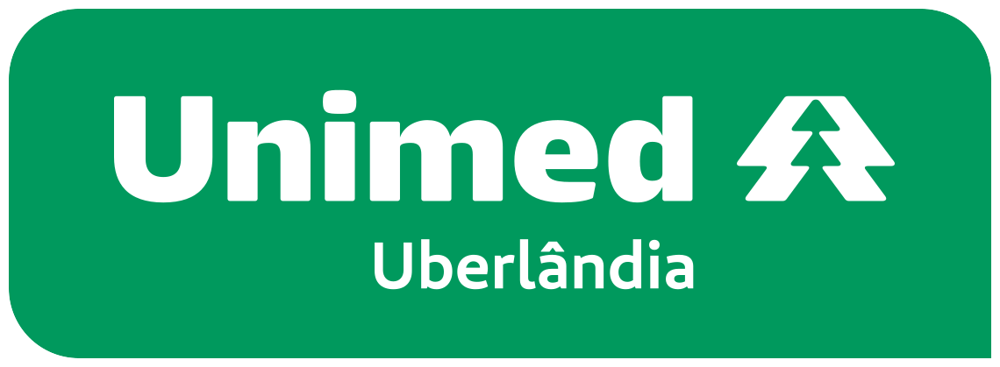

Radar de Tendências
O que está valendo neste ciclo. Só as tendências ativas chegam às peças; as em teste ficam guardadas até a decisão.

O que está valendo neste ciclo. Só as tendências ativas chegam às peças; as em teste ficam guardadas até a decisão.